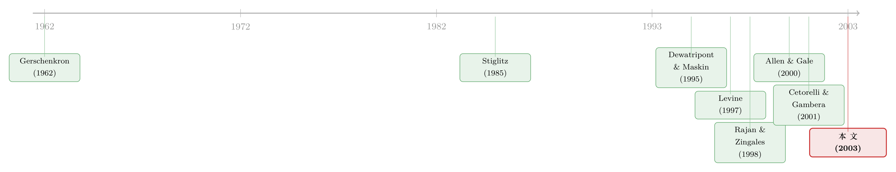

金融结构与增长之谜：把『国家制度』乘进『产业基因』里
本文读的是 Carlin & Mayer (2003, Journal of Financial Economics)：在 14 个发达 OECD 国家、27 个制造业、1970–1995 年的数据里，作者发现一国金融体系的结构（信息披露、银行集中度、所有权集中度）本身和增长没什么稳定关系——但只要把它和产业的「融资基因」乘在一起，关系立刻显现：信息披露好的国家，依赖外部股权与高技能劳动的产业长得更快；而这种关系几乎全部体现在研发，而非固定资产投资上。
1 一个被 Levine 「劝退」的问题
先说一个让人有点泄气的事实。
研究金融与增长的文献已经汗牛充栋。从 Levine (1997) 的综述，到 Levine & Zervos (1998) 那篇被反复引用的基准研究，再到 Beck et al. (2000)、Rousseau & Wachtel (2000)，大家反复确认了一件事：一国金融体系越发达，经济增长越快。银行部门的规模、股票市场的活跃度，都能预测未来的增长。
但这些研究有一个共同的「软肋」：它们的样本几乎都是发达国家和发展中国家的混合。一旦你只盯着发达国家看，结论就塌了。Levine 自己在综述里写得很直白——「仅用这些国家做比较，会让人觉得金融结构和经济发展的水平与增速无关」（1997, p. 720）。
这话听上去像是给后来者关上了一扇门。发达国家之间，金融体系的差异其实大得惊人：有的国家股票市场庞大（美国、英国），有的国家银行体系当道（德国、日本）；有的国家股权高度分散，有的国家被几个大股东牢牢攥住。可偏偏在这群「优等生」之间，金融结构和增长看不出关系。
于是一个自然的问题是：难道所有的金融制度，真的对所有产业、所有国家都一样好用吗？
Carlin 和 Mayer 的回答是：不。门没关上，只是大家一直用错了钥匙——单看「金融结构」这一个变量是看不出名堂的，你必须把它和「产业是怎么融资的」乘在一起看。
2 真正关键的一步：不是「结构」，而是「结构 × 基因」
这篇论文最核心的一招，是从 Rajan & Zingales (1998) 那里借来、又往前推了一大步的思路。
Rajan & Zingales 的洞见是：与其问「金融发展会不会促进增长」，不如问「金融发展对那些天生依赖外部融资的产业，是不是格外重要」。他们用产业层面的数据，做了一个交互项——金融发展 × 外部融资依赖度——结果发现，会计准则越好的国家，外部融资依赖型产业长得越快。这一招的妙处在于，它把「国家整体」的内生性问题（国家不可观测的异质性可能同时影响金融和增长）化解掉了：因为识别用的不是「哪个国家金融更发达」，而是「在同一个国家内部，依赖外部融资的产业相对不依赖的产业，是不是长得更快」。
Carlin & Mayer 把这个「交互」的思路推到了极致。他们不满足于「外部融资依赖」这一个维度，而是把国家制度和产业特征各自拆成三块，两两相乘：
- 国家这一侧有三个结构变量：信息披露 (information disclosure，用会计准则衡量)、银行集中度 (bank concentration)、所有权集中度 (ownership concentration)；
- 产业这一侧有三个特征变量：对股权融资的依赖 (equity-finance dependence)、对银行融资的依赖 (bank-finance dependence)、对其他利益相关者投入的依赖 (dependence on other stakeholders)。
为什么是这三对？因为背后站着三套理论。信息理论（Allen, 1993；Allen & Gale, 1999, 2000）说，证券市场容许投资者持有分歧的看法，适合给新技术融资，而银行擅长在共识度高的传统投资上发挥信息规模经济。再谈判理论（Dewatripont & Maskin, 1995；Huang & Xu, 1999）说，分散的多银行体系能施加更硬的预算约束、更适合高风险的研发，集中的单一银行体系则适合成熟产业的模仿型投资。治理与承诺理论（Stiglitz, 1985；Shleifer & Vishny, 1986；Burkhart et al., 1997；La Porta et al., 1999）说，分散的所有权能更可信地「承诺不干预」，因而适合需要外部投资者和管理层共同投入的活动，集中的所有权则适合内部融资、需要积极治理的活动。
把这三套理论翻译成回归方程，就是这篇论文的骨架。增长方程长这样：
$$ \begin{aligned} \mathit{Growth}_{ik} =\; & \gamma_1(\mathit{disclosure}_k \cdot \mathit{equity}_i) + \gamma_2(\mathit{disclosure}_k \cdot \mathit{bank}_i) + \gamma_3(\mathit{disclosure}_k \cdot \mathit{other}_i) \\ & + \gamma_4(\mathit{bankconc}_k \cdot \mathit{equity}_i) + \gamma_5(\mathit{bankconc}_k \cdot \mathit{bank}_i) + \gamma_6(\mathit{bankconc}_k \cdot \mathit{other}_i) \\ & + \gamma_7(\mathit{ownconc}_k \cdot \mathit{equity}_i) + \gamma_8(\mathit{ownconc}_k \cdot \mathit{bank}_i) + \gamma_9(\mathit{ownconc}_k \cdot \mathit{other}_i) \\ & + \gamma_{10}\,\mathit{share}_{ik} + \text{country dummies} + \text{industry dummies} + \varepsilon_{ik} \end{aligned} $$
固定投资方程 \(\mathit{FI}_{ik}\)（以占增加值的比例衡量）和研发方程 \(\mathit{R\&D}_{ik}\)（同样以占增加值的比例衡量）结构完全一样，只是把系数换成 \(\varphi\) 和 \(\rho\)，并去掉了 share 这一控制项。
请注意三个细节，它们是这套设计能站住脚的关键：
第一，每个方程都放进了完整的国家虚拟变量和产业虚拟变量。这意味着「德国整体增长慢」「半导体产业整体增长快」这类一阶效应全部被吸收掉了，剩下能解释的，只有「特定制度 × 特定产业」的交互。识别的全部重量，压在交互项上。
第二，增长方程里多了一个 \(\mathit{share}_{ik}\)——产业 \(i\) 在国家 \(k\) 期初产出中的份额。这是为了控制「均值回归」。后面会讲，这个控制项不是可有可无的摆设。
第三，作者把固定投资和研发分开估计。这是这篇论文区别于前人的第二个要点：理论预测，有些制度专门关乎无形投资（研发），有些专门关乎有形投资（厂房设备），把两者混在一起看会互相抵消。
理论预测被整理成四个假设。H1：信息披露与股权依赖的交互项系数为正（\(\gamma_1>0,\ \varphi_1>0,\ \rho_1>0\)），且在研发方程里比在固定投资方程里更显著。H2：在发达国家，银行集中度与银行依赖的交互项系数为负（\(\gamma_5<0,\ \varphi_5<0,\ \rho_5<0\)）——分散的银行体系更能施加硬预算约束、扶持银行依赖型产业的成长；而在发展中国家，这个符号会反过来（\(\gamma_5>0\)）。H3：所有权集中度与各产业特征的交互项系数为负。H4：所有这些交互，和研发的跨产业、跨国差异的关系，要比和固定投资的关系更紧密。
3 数据：为什么是这 14 个国家、这 27 个产业
数据来自 OECD 的两个数据库：STAN（Structural Analysis Industrial，结构分析产业数据库）提供不变价增加值与固定投资，ANBERD（Analytical Business Enterprise Research and Development）提供标准化的研发支出。观测单位是「国家 × 产业」。
样本是 14 个发达 OECD 国家 × 27 个（主要是三位数 SIC）制造业，时间跨度 1970–1995。增长数据覆盖全部 27 个产业，固定投资覆盖 27 个产业（1970–1990），研发数据则只有 15 个产业（1973–1994）——这是数据可得性决定的。石油精炼业因为价格指数的麻烦被全程剔除。
为什么不用前人（Rajan & Zingales, 1998；Cetorelli & Gambera, 2001）惯用的联合国《工业统计年鉴》？因为 OECD 数据有三个好处：测量误差更小、能同时给出不变价增加值/固定投资/研发三套量、时间长达 25 年（联合国数据只有十年）。代价是国家覆盖面窄——但既然这篇论文专攻发达经济体，少了发展中国家反而不算损失。
这里有一个被作者花了整张表去处理的方法论问题，值得停下来看一眼。
4 一个不起眼但要命的细节：均值回归
各国制造业增速差异很大：意大利 0.030、日本和芬兰 0.027 居前，而德国 0.010、挪威 0.006、英国 0.004 垫底。
但接着，一个自然的问题是：这种「国家间增速差异」，到底是因为某些国家期初就押对了高增长的产业（结构红利），还是因为它们在各行各业里普遍长得更好（真本事）？
作者把每个国家增速对世界平均的偏离，分解成三块——份额效应 (share effect)、增长效应 (growth effect)、交互效应 (interactive effect)：
$$ \sum_i \big(a_{ik}\,g_{ik} - a_{i\cdot}\,g_{i\cdot}\big) = \sum_i \big(a_{ik}-a_{i\cdot}\big)\,g_{i\cdot} + \sum_i a_{i\cdot}\big(g_{ik}-g_{i\cdot}\big) + \sum_i \big(a_{ik}-a_{i\cdot}\big)\big(g_{ik}-g_{i\cdot}\big) $$
其中 \(a_{ik}\) 是 1970 年产业 \(i\) 在国家 \(k\) 制造业中的份额，\(g_{ik}\) 是该产业 1970–1995 的增速，下标圆点表示对所有国家取平均。
方差分析的结果几乎是一边倒的：份额效应只解释了 \(-9.9\%\) 的国家增长差异，增长效应解释了 \(118.3\%\)，交互效应 \(-8.4\%\)。换句话说，国家间增速的差异，几乎全部来自「同样的产业在不同国家长得不一样快」，而不是来自期初产业结构的运气。
更有意思的是，份额效应和交互效应双双为负，说明存在均值回归：期初份额高的产业，后续增速反而低于平均。这就解释了为什么增长方程里非放 \(\mathit{share}_{ik}\) 不可——不控制它，回归就会被均值回归污染。这一步看似技术性，却是后面所有交互项系数能被干净解读的前提。
5 反转：金融体系定的是「研发」，不是「厂房」
铺垫到这里，论文最漂亮的一击出现了。
如果你还记得 H4 的预测——金融制度更关乎研发、而非固定投资——那么 Panel B 里那个简单到不能再简单的相关系数，就是最直白的证据：在所有三套数据都齐全的「国家 × 产业」样本里，产业增长与研发的相关系数高达 0.508，而与固定投资的相关系数只有 0.010。
0.508 对 0.010。这几乎是在说：跨国跨产业的增长差异，和「谁在搞研发」紧紧绑在一起，和「谁在盖厂房」几乎毫无关系。
这把整篇论文的落点钉死了。发达经济体里，金融体系的结构之所以重要，不是因为它决定了资本积累的多少（固定投资），而是因为它决定了创新活动的格局（研发）。这正是为什么前人在发达国家样本里看不出金融结构和增长的关系——他们盯着的是产出和资本，而真正被金融结构塑造的，是那个更隐蔽、更无形的研发维度。
回到主回归。综合各方程，论文报告了一个稳健的图景：一国金融体系的结构，与依赖外部股权和高技能劳动的产业的增长之间，关系格外强。这与 H1 一致——信息披露好（会计准则高）的国家，股权依赖型产业长得更快，且这种关系在研发里比在固定投资里更突出。而与银行融资依赖相关的那些交互（H2），则更多出现在发展阶段较早的国家——这呼应了 Gerschenkron (1962) 和 Boyd & Smith (1998) 的老观察：在资本稀缺、监督成本相对便宜的发展早期，银行融资才是主角，所以发达国家和发展中国家本就不该被放进同一个回归里。
论文用两个国家对照来给这套逻辑「上色」，很能说明问题。
其一是德国 vs 美国的专利结构。德国的会计披露远低于美国，所有权集中度却高得多。按理论预测，德国金融体系该和成熟、内部融资的产业绑定，美国该和高技术、外部融资依赖的产业绑定。事实正是如此：信息技术、半导体、生物技术在美国 30 个产业里专利强度排前六，在德国排倒数后四；德国专利最强的是土木工程和运输设备，恰恰是美国倒数前三。两国专利专业化指数的相关系数是 $-0.78$——几乎完全相反。
其二是丹麦 vs 芬兰。两国的银行集中度和所有权集中度相近，但芬兰的会计准则高于发达国家平均、丹麦低于平均（差别主要来自丹麦对股东信息的披露更少）。按理论，股权依赖型产业该在披露更好的芬兰长得更快。结果：仪器、电气机械、塑料、非电气机械这四个最依赖股权的产业，在芬兰整个 1980 年代都在加速、电气机械在 1990 年代再次猛涨；而在丹麦，这四个产业的增速在两个十年里持续下滑。传统比较优势理论会强调芬兰的自然资源禀赋，但木材、家具这些资源密集型产业的相对增长，反而在丹麦加速、在芬兰放缓。在这段技术冲击的岁月里，金融结构比资源禀赋更能解释两国产业表现的分化。
6 文献脉络
把这条线索拉直，能看出一个清晰的接力。
最早的源头是 Gerschenkron (1962) 关于「金融体系与发展阶段相匹配」的历史观察，以及后来 Boyd & Smith (1998) 把它形式化的「随发展阶段、股权相对债务的重要性上升」的模型。这是「金融结构会随阶段变化」这一信念的根。
接着，三套理论分头给出了「什么金融配什么活动」的微观机制：信息理论（Allen, 1993；Allen & Gale, 1999, 2000）、再谈判理论（Dewatripont & Maskin, 1995；Huang & Xu, 1999）、治理与承诺理论（Stiglitz, 1985；Shleifer & Vishny, 1986；Burkhart et al., 1997）。
实证这一侧，则是另一条平行的河流。Levine & Zervos (1998) 是跨国增长回归的基准；Beck et al. (2000)、Rousseau & Wachtel (2000) 用动态面板消除国家固定效应；而真正改变打法的是 Rajan & Zingales (1998)——把「外部融资依赖 × 金融发展」做成交互项，在产业层面识别。Cetorelli & Gambera (2001) 顺着这个思路，问的是银行体系的结构（而非规模）。再往后，Levine (2002)、Beck & Levine (2002)、Demirgüç-Kunt & Maksimovic (2002) 这一波又集体认为：是整体金融发展和法律体系的效率、而非金融结构（银行型还是市场型）在驱动增长。

Carlin & Mayer (2003) 恰好站在这两条河的交汇处：它继承了 Rajan & Zingales 的「交互识别」武器，但把交互维度从一维扩成「三制度 × 三特征」的九项矩阵；它继承了「金融结构无关论」的发达国家样本，却用「结构 × 基因」的交互、外加「研发 vs 固定投资」的拆分，硬是从里面读出了关系。它的立场也因此微妙——它不否认 Levine 那一派「发达国家里金融结构看似无关」的观察，而是说：那只是因为大家没把产业特征乘进去、也没把研发单拎出来。
（关于英美与德国为什么走上了「市场 vs 银行」两条不同的融资道路，可参见《为什么英国人发债，德国人却找银行？》；关于法律与制度起源如何塑造一国金融，可参见《法律是行李，风土是地基》。）
7 评论与延伸（Q&A + 研究方向）
(a) 几个可能的疑问
Q：这套「交互识别」真的能化解内生性吗？国家虚拟变量不就把金融结构吸收掉了？
正是。这恰恰是设计的精髓：因为方程里放了完整的国家虚拟变量，「德国金融体系长什么样」的主效应被完全吸收，论文从不直接估计「金融结构 → 增长」这条会被国家不可观测异质性污染的路径。它估计的是交互项——在同一个国家内部，制度对「股权依赖型产业」相对「非股权依赖型产业」的差别影响。代价是，你识别出的是「相对效应」，不是「金融结构对一国整体增长的总效应」。
Q：和 Rajan & Zingales (1998) 到底差在哪？
R&Z 的交互是一维的（外部融资依赖 × 金融发展），本文是 3×3 的九项矩阵（三类制度 × 三类产业基因），并且额外把因变量拆成增长、固定投资、研发三套。所以本文能回答 R&Z 回答不了的问题：是哪一种制度、配哪一种产业、影响的是有形还是无形投资。代价是参数一下子变多，对小样本（14 国 × 27 产业）的检验力是个考验。
Q：0.508 对 0.010 这个对比，会不会只是因为研发数据样本更小、更「干净」？
这是个合理的担忧。研发数据只覆盖 15 个产业、1973–1994，样本和固定投资不完全重合。论文报告的相关系数是在「三套数据都齐全」的子样本里算的，已经尽量可比；但研发本身波动更大、跨产业差异更极端，天然更容易和增长同步。我会更想看到把两者放进同一回归、用同一组观测直接比较交互项显著性的检验（这正是 H4 的正式形式）。
Q：会计准则真的能代表「信息披露」吗？会不会只是别的制度的影子？
这是 R&Z 以来一直被追问的。会计准则（来自 CIFAR 等）确实可能和法律体系、投资者保护高度相关（La Porta et al., 1997, 1998）。本文的部分对冲，是把所有权集中度、银行集中度也同时放进矩阵，让它们互相「抢解释力」；但要完全把「信息披露」从「法律质量」里剥干净，光靠这几个国家层面的代理变量是不够的。
Q：为什么发展中国家会让银行交互项的符号反过来？
因为 Boyd & Smith (1998) 的逻辑：发展早期资本稀缺，监督成本相对便宜，所以监督密集的银行融资被偏好；而集中的银行体系恰好擅长给模仿型、低不确定性的投资提供长期资金。这也是论文坚持「发达国家和发展中国家不能合并回归」的理论理由——把它们混在一起，正负相消，就会得出「金融结构无关」的假象。
Q：因果方向能确定吗？会不会是「高研发产业自己长出了好的金融制度」？
不能完全确定，这是本文最实在的软肋。制度（会计准则、所有权结构）在样本期内基本被当作外生、不随时间变化的国家特征处理，识别靠的是它与产业基因的交互。但产业的「股权依赖度」「银行依赖度」本身往往用美国数据构造、再假设其反映「技术性」的跨国共通基因——一旦这个假设不成立（某国的制度反过来塑造了本国产业的融资模式），交互项的解读就会被削弱。
(b) 几个可能的研究问题与提案
1. 把「外资持有人」加进国家制度矩阵。 【经济故事】本文的三类制度（披露、银行集中、所有权集中）都是「本土」制度。但过去二十年，外资股东的进入极大改变了很多国家的所有权结构与治理。一个自然的延伸是：外资持有比例高的国家，是否让股权依赖型、研发密集型产业长得更快——外资是不是充当了「分散所有权 + 高披露要求」的替代品？【可行性】中。所有权数据可用 OECD、Orbis 或各国持股数据库，产业基因沿用本文构造；识别可借鉴本文的交互框架，但需处理外资进入的内生性（可考虑资本账户开放、指数纳入等冲击作为外生变化）。
2. 用公司债市场结构替换「银行集中度」。 【经济故事】本文把信贷市场结构简化成「银行集中度」，但发达国家里公开债券市场的深度差异巨大。问题是：公司债市场越发达的国家，是否让长期、研发密集的产业长得更快——债券市场是不是在扮演「分散债权人」的角色，提供比集中银行更硬的预算约束？【可行性】高。公司债发行量、市场深度数据在 BIS、Dealogic 可得；产业层面增长与研发沿用 OECD STAN/ANBERD 的更新版本；交互识别策略可直接平移。这一方向与流动性、信用市场研究天然契合。
3. 把样本延伸到 1995 年之后，检验关系是否「衰减」。 【经济故事】本文止于 1995 年。此后全球资本市场一体化、IFRS 趋同、会计准则跨国差异收窄。如果本文的机制成立，那么随着披露差异被抹平，「披露 × 股权依赖」的交互项应该逐年衰减。【可行性】高。OECD 数据已延伸至 2010 年代，会计准则的跨时变化可由 IFRS 采纳时点刻画；这等于把本文的横截面设计升级成「制度变化 × 产业基因」的双重差分 (difference-in-differences, DiD)，识别力反而更强。
4. 用专利微观数据替代产业层面研发，做更细的「创新 × 制度」匹配。 【经济故事】本文用德美专利专业化指数（相关 $-0.78$）做了启发性的对照，但只停在产业层面。能否用 EPO/USPTO 的公司级专利数据，直接检验「高披露国家的股权依赖型企业，是否产出更多、更基础（而非模仿）的创新」？【可行性】中。专利数据可得且颗粒度高，但要把「企业融资模式」和「专利质量」干净地连起来，需要企业层面的融资结构数据，跨国可比性是主要障碍。
评述者的判断
这篇论文的贡献，我认为在「问法」而不在「答案」。它最聪明的地方，是把一个被前人判定「无解」的问题（发达国家间金融结构与增长无关），通过两个动作重新激活：一是把国家制度和产业基因做成 3×3 的交互矩阵，让识别全部落到交互项上、绕开国家层面的内生性；二是坚持把研发和固定投资拆开，结果 0.508 对 0.010 的对比一锤定音——金融体系塑造的是创新，不是资本积累。这个「研发 vs 固定投资」的反转，是全文最有说服力、也最经得起复述的一击。
对识别，我有两点保留。其一，产业「融资基因」的跨国共通性假设是整个框架的承重墙，一旦某国制度反过来塑造了本国产业的融资模式，交互项就不再干净；本文对此的处理仍偏弱。其二，会计准则与法律体系、投资者保护高度共线，「信息披露」这个渠道很难从「制度质量」的大杂烩里被单独识别出来——同时放入三类制度让它们互抢解释力是有益的，但 14 个国家的自由度实在不宽裕。
后续我最想看到的，是把这套设计搬到 1995 年之后、用会计准则趋同（IFRS）作为外生冲击做成 DiD：如果机制为真，披露差异被抹平的产业，其「披露 × 股权依赖」的增长溢价应当随之消失。那将是对本文核心机制一次真正的、动态的检验。
参考文献
Allen, F. (1993). Stock markets and resource allocation. In Mayer, C., Vives, X. (Eds.), Capital Markets and Financial Intermediation. Cambridge University Press.
Allen, F., Gale, D. (1999). Diversity of opinion and the financing of new technologies. Journal of Financial Intermediation 8, 68–89.
Allen, F., Gale, D. (2000). Comparing Financial Systems. MIT Press.
Beck, T., Levine, R. (2002). Industry growth and capital allocation: does having a market- or bank-based system matter? Journal of Financial Economics 64, 147–180.
Beck, T., Levine, R., Loayza, N. (2000). Finance and the sources of growth. Journal of Financial Economics 58, 261–300.
Boyd, J., Smith, B. (1998). The evolution of debt and equity markets in economic development. Economic Theory 12, 519–560.
Burkhart, M., Gromb, D., Panunzi, F. (1997). Large shareholders, monitoring and the value of the firm. Quarterly Journal of Economics 112, 693–728.
Cetorelli, N., Gambera, M. (2001). Banking market structure, financial dependence and growth: international evidence from industry data. Journal of Finance 56, 617–648.
Demirgüç-Kunt, A., Maksimovic, V. (1998). Law, finance and firm growth. Journal of Finance 53, 2107–2137.
Demirgüç-Kunt, A., Maksimovic, V. (2002). Funding growth in bank-based and market-based financial systems: evidence from firm level data. Journal of Financial Economics 65, 337–363.
Dewatripont, M., Maskin, E. (1995). Credit efficiency in centralized and decentralized economies. Review of Economic Studies 62, 541–555.
Gerschenkron, A. (1962). Economic Backwardness in Historical Perspective. Harvard University Press.
Huang, H., Xu, C. (1999). Institutions, innovations, and growth. American Economic Review 89, 438–443.
La Porta, R., Lopez-de-Silanes, F., Shleifer, A., Vishny, R. (1997). Legal determinants of external finance. Journal of Finance 52, 1131–1150.
La Porta, R., Lopez-de-Silanes, F., Shleifer, A., Vishny, R. (1998). Law and finance. Journal of Political Economy 106, 1113–1155.
La Porta, R., Lopez-de-Silanes, F., Shleifer, A. (1999). Corporate ownership around the world. Journal of Finance 54, 471–517.
Levine, R. (1997). Financial development and economic growth: views and agenda. Journal of Economic Literature 35, 688–726.
Levine, R. (2002). Bank-based or market-based financial systems: which is better? Journal of Financial Intermediation 11, 1–30.
Levine, R., Zervos, S. (1998). Stock markets, banks and economic growth. American Economic Review 88, 537–558.
Rajan, R., Zingales, L. (1998). Financial dependence and growth. American Economic Review 88, 559–586.
Rousseau, P., Wachtel, P. (2000). Equity markets and growth: cross-country evidence on timing and outcomes, 1980–1995. Journal of Banking and Finance 24, 1933–1957.
Shleifer, A., Vishny, R. (1986). Large shareholders and corporate control. Journal of Political Economy 96, 461–488.
Stiglitz, J. (1985). Credit markets and the control of capital. Journal of Money, Credit and Banking 17, 133–152.
Carlin, W., Mayer, C. (2003). Finance, investment, and growth. Journal of Financial Economics 69(1), 191–226.